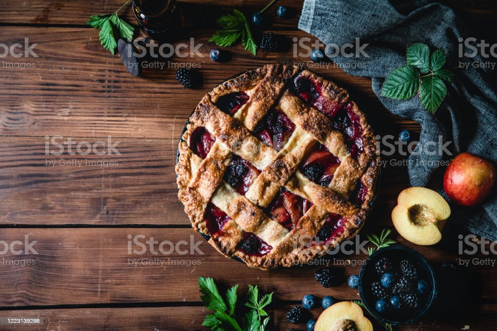

Texas-Trash-Pie

Description
Texas Trash Pie is a rich, decadent pie made of chocolate, coconut, pecans, and several other sweet items.
This pie is said to have been started in Round Rock, Texas by a couple who just threw sweet ingredients together and formed what is known as the Texas Trash Pie. Customers who tried the pie loved it and thus became the famous Texas Trash Pie.
Ingredients
- frozen pie crust
- dark chocolate chips
- soft caramels
- graham cracker crusts
- shredded sweetened coconut
- pecans
- pretzels
- melted butter
- vanilla extract
- sweetened condensed milk
Steps
- Preheat oven to 350 F with rack in center slot in oven.
- 2.Mix all ingredients into a mixing bowl and stir together.
- 3.Pour the filling into the pie crust and bake for 45 minutes until pie is no longer wiggling when moved.
- Let the Texas Trash Pie completely cool for 30 minutes before slicing and serving.